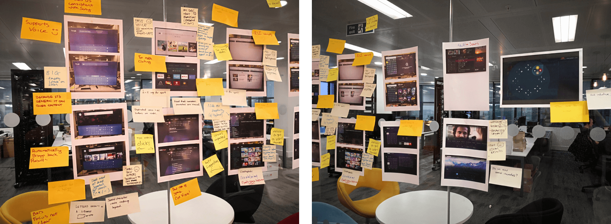
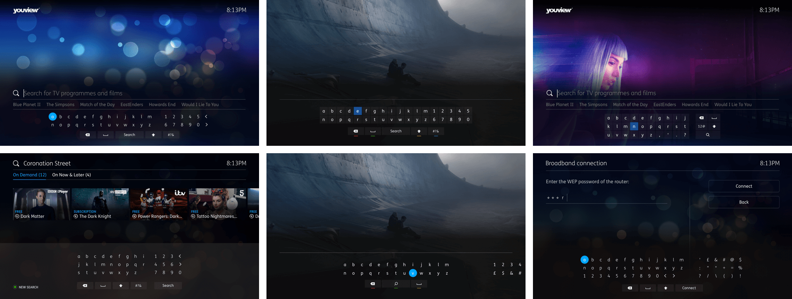
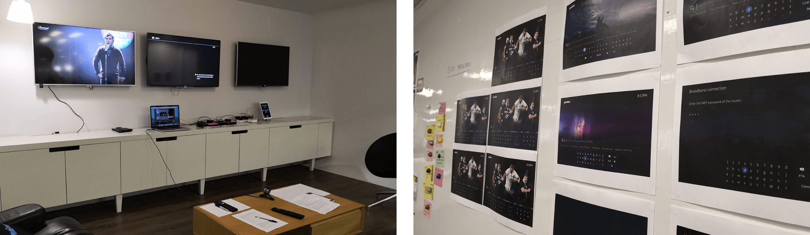
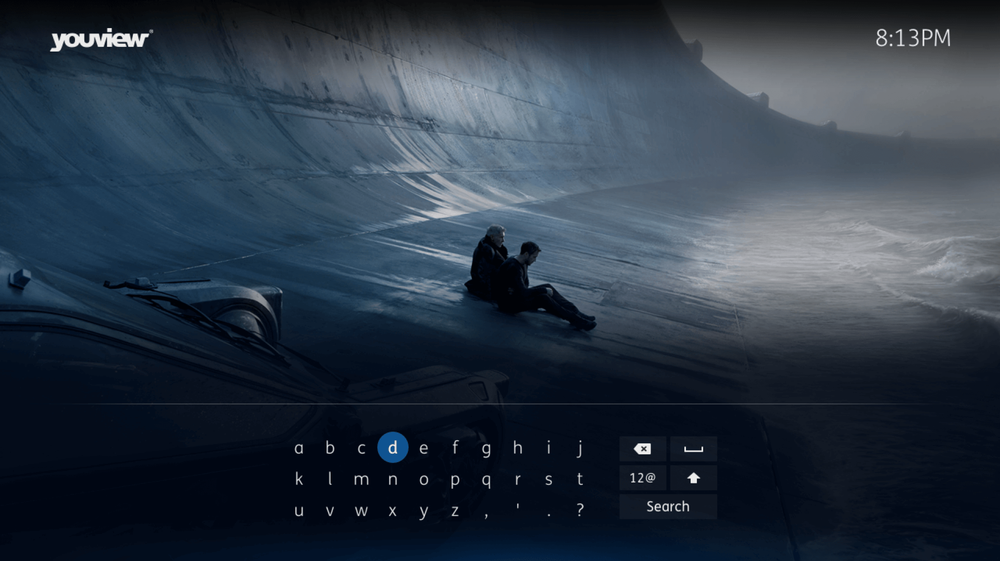

This project involved me leading research, conceptualisation and user testing for a new on-screen keyboard. This was required to aid users as they perform content searches across the YouView UI.
To kick this project off the product design team came together for a round of competitor research. This involved us picking through examples of on-screen keyboards from across the many various apps and services that we know our users already engage with. The desired outcome from these sessions was to identify pain points that could be removed and key features that we would want to refine before carrying into our designs.
Armed with a direction that we would want to investigate; rough ideas were then drafted. These would go through a series of review and redesign until we were happy that we could prototype and test at least 2 variants.
User testing consisted of 2 rounds. 1 prototype variant was tested using company employees, selected from parts of the business with minimal exposure to the UI work. The conclusions from this round were then used to inform a 2nd variant of the prototype. The 2nd round of testing was then conducted with real users who were presented with both variants.
Users were tasked with completing a selection of tasks designed to gauge how well they could interact with the prototypes in order to perform content searches.
Research and test findings were presented back to senior stakeholders. Refinements were then undertaken in collaboration with the development teams in order to begin building out the feature to a release ready standard.
